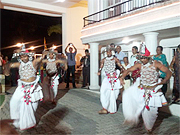
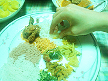
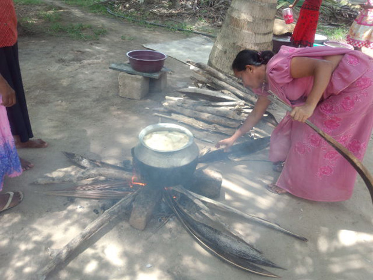

「一般家庭にホームステイができるので参加しました。
英語レッスンは非常に楽しかったです。
テキストだけでなく、私にトピックを選ばせてくれたため、より興味が持てました。
テキストを使用した内容も私が苦手とする文法を選ばせてくれ効率よく行えました。
ホームステイでは、英語以上に素晴らしいものを得られました。
Mr & Mrs. Jayawardana 夫妻には何から何までお世話になり、素晴らしい経験をさせていただきました。
食事も大変美味しく、辛さも日本人の食べれる範囲内にしてくださいました。
息子さんの新築のセレモニーも拝見し、ご親戚のお通夜にも連れて行っていただきました。
１０日間の滞在では短すぎると感じるほど、ホストファミリーとの毎日を楽しく過ごせました。
毎日楽しめるようにホストファミリーがいつも配慮をしてくれました。
虫除けスプレー、蚊取り線香、痒み止めは、絶対に必要だと思いました。

低開発村視察は、TFGスタディツアーに途中参加でき、開発の手助けを行っていることを詳しくお聞きしました。
Ms. Manel が、最大の経験ができるように臨機応変に対応してくれ、TFGスタディツアーと日程を合わせてくれたので、予想以上の経験ができました。
１０年前の高級リゾートホテル巡りも最高でしたが、今回は、自然との共存などの日常生活を味わうことができ、ホストファミリーに恵まれたおかげで、日本では味わえない経験ができました。

今回の滞在は、一般的な海外旅行とは全く別の楽しさがありました。
国に対する思い出よりも、家族に対する思い出の方が大きいです。
英語だけでなく、色々な勉強になり、非常に有意義な旅行になりました。
また、スリランカへ行きたいです。
次回はもう少し長期間で行きたいです。
ありがとうございました。」